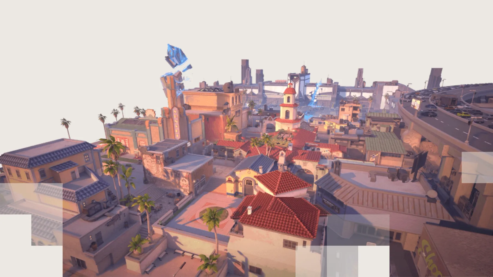
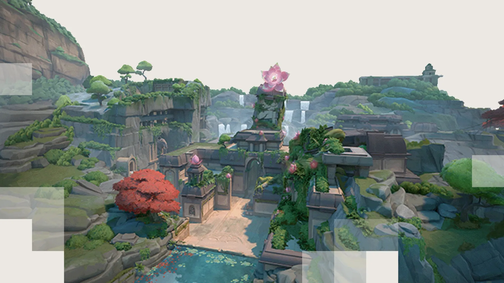
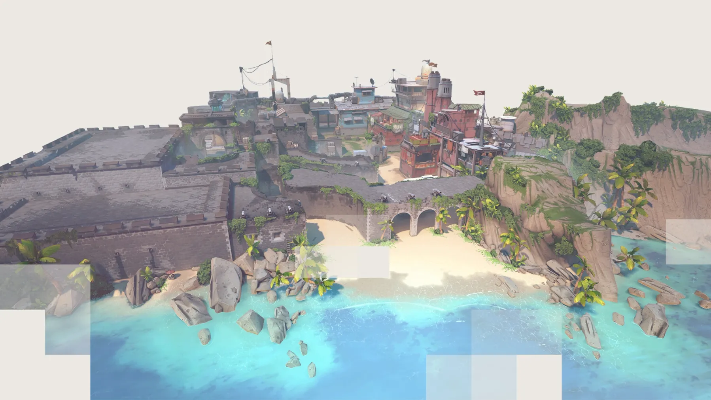
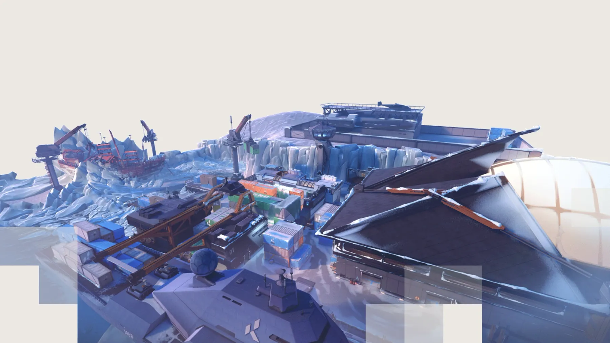
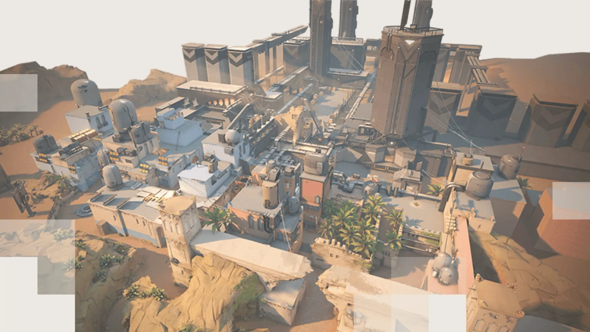
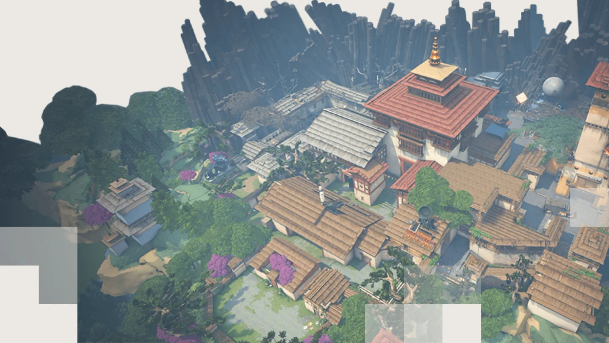
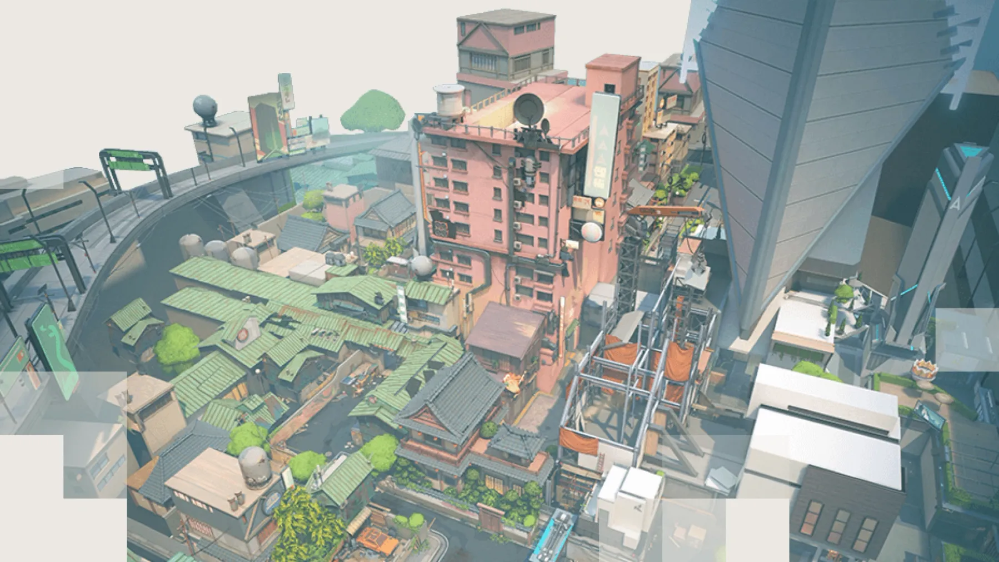
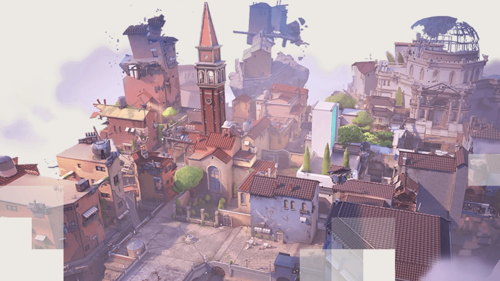
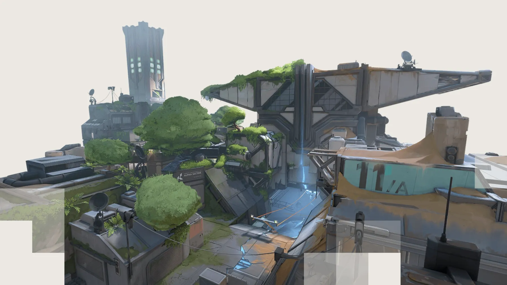
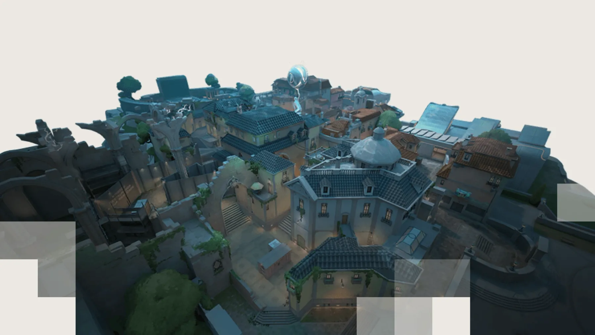

Um desastre em uma instalação da Kingdom ameaça engolir toda a vizinhança. Dê um pulo no seu food truck favorito e depois lute por toda a cidade neste mapa três rotas.
Uma estrutura misteriosa com um conduíte astral irradia poder ancestral. Grandes portas de pedra oferecem várias oportunidades de movimentação e revelam caminhos para três locais enigmáticos.
Conheça as ruínas históricas ou visite as grutas deste paraíso tropical. Mas é bom se cobrir, pois temos espaços muito abertos e embates de longa distância. Cuide dos seus flancos e você poderá curtir a brisa do Breeze.
Seu próximo campo de batalha será uma área de escavação secreta da Kingdom retomada pela força do Ártico. Você precisará ter cuidado com os terrenos horizontais dos dois pontos principais, que são protegidos por neve e metal. Aproveite para usar as tirolesas, e seus inimigos nunca verão seu ataque iminente.
Dois pontos. Nenhuma área no meio. Você precisa escolher: direita ou esquerda? E aí, qual vai ser? Ambos os lados oferecem caminhos diretos para os atacantes, e dois teleportadores de sentido único facilitam o flanqueamento.
Sob um mosteiro abandonado, é possível ouvir agentes se enfrentando pelo controle de três pontos distintos. Neste mapa, há mais áreas para controlar. Em compensação, os defensores também conseguem aproveitar o território extra para coordenar investidas mais agressivas.
Se quiser avançar, é preciso subir. Separados por uma área central elevada, dois pontos fornecem movimentação rápida com duas cordas ascendentes. Cada ponto tem uma torre imponente que é vital para o controle da área. E não se esqueça: mantenha os olhos abertos e focados nas áreas elevadas antes que tudo vá pelos ares.
Com várias opções de posicionamento e conflito, um território aberto divide duas áreas em Ascent. Cada uma pode ser fortificada por portas explosivas irreversíveis que, quando derrubadas, forçam as equipes a destruí-las ou a acharem outra maneira de prosseguir. Não deixe que o inimigo tome o seu território.
Um local de pesquisas altamente confidencial partido ao meio por um experimento com Radianita malsucedido. Com opções tão divididas quanto o próprio mapa para os defensores, a escolha é sua: encare os atacantes na própria base deles ou prepare o terreno para um ataque iminente.
Atacantes avançam em direção aos Defensores neste vibrante mapa subaquático com dois pontos principais. Pearl é um mapa sem mecânicas focado no ambiente. Encare a batalha em um Meio compacto ou em áreas mais alongadas no nosso primeiro mapa situado na Terra Ômega.

 pt-BR
pt-BR